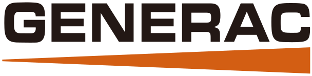
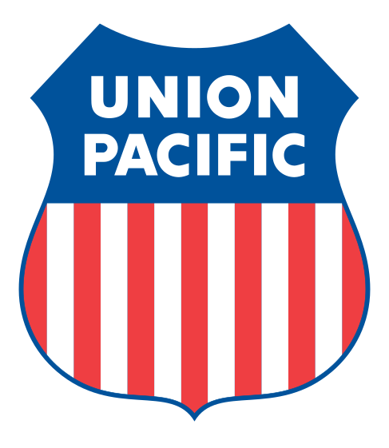

UW Credit Union
– Present
Joined as an AI Engineer to help with automation and machine learning applications.
I am a lifelong learner who loves problem solving. I'm grateful for my career as an AI Engineer / Data Scientist where I get to utilize my skillset to solve challenging problems.
Luckily, the field is constantly evolving which keeps things interesting!
– Present
Joined as an AI Engineer to help with automation and machine learning applications.

–
Worked as a data scientist to help optimize operations using statistics and machine learning.
Spent a lot of my time doing time series forecasting to help the business plan and make decisions.
Also devised a method of prioritizing customers to help sales reps make the most of their time. I devised an A/B testing strategy for evaluating and quantifying the impact of the workflow change.
–
Developed a time-series forecasting model to predict new signups and renewals as a practicum project.
The model had an interface that allowed users to run the model and update predictions based on new factors, such as promotions, which can have a dramatic impact on future predictions.
–
I got my Master of Science in Analytics remotely while working at Epic.
Here I applied machine learning and statistics on a range of projects including:
–
Helped optimize the revenue cycle of healthcare organizations across the United States.
Led the reporting workgroup. Developed analytical reports and new features with SQL, Python and Caché.
Presented machine learning features both internally and externally and helped lead project implementations.

–
Constructed a TensorFlow LSTM model for predicting train faults using time series data.
Improved AUC by 15% which significantly improved fault prediction and understanding of the root causes.
–
Served as a data analyst intern.
Collaborated with several teams to implement a new asset management system that would help track equipment and repairs.
This project enabled new analytics to be performed such as answering, "Which HVAC brand is the most reliable?"
–
Received my Bachelor of Science in Management Information Systems with a focus on analytics.
Awarded “Best Healthcare Innovation Helping People Live Healthier Lives" at HackISU 2018 by developing an AI assistant with Rasa, a Python deep learning NLP library, with fellow Union Pacific interns.
Volunteered with the Computational Thinking Workshop to teach over 100 students programming skills.